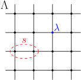
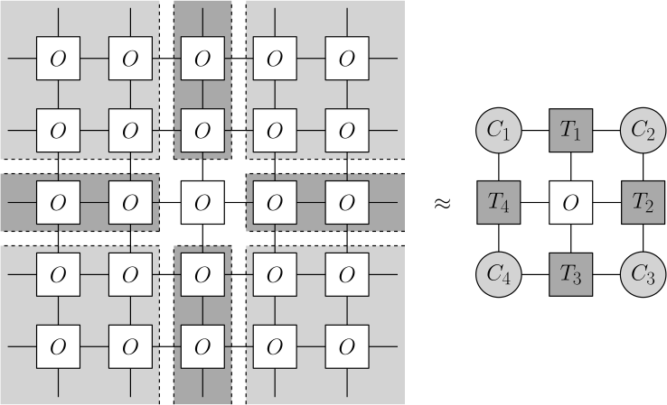

Tensor Network Algorithms#
Now that we have introduced tensor networks in general and have spent some time on the particular case of MPS in one spatial dimension, it is worth to consider some possible applications of this tensor-network framework. While there are a large number of theoretical results in quantum many body physics based on tensor networks, for example the characterization of (symmetry-protected) topological order in one- and two-dimensional quantum systems, here we will focus more on algorithmic and numerical aspects. In this section we will give a general introduction to the kind of problems that can be tackled using tensor-network simulations and discuss an approach to simulating dynamics in a one-dimensional quantum system as an illustrative example.
Simulating Quantum Systems#
A first setting where tensor network methods have been intensively applied is that of simulating quantum systems. . We will introduce these algorithms in the setting of discrete spin systems. Consider a system in which physical spins with a local Hilbert space \( \mathcal H_\lambda = \mathbb C^d \) of dimension \( d \) are located at every site \( \lambda \) of some lattice \( \Lambda \), giving rise to a total Hilbert space of the system \( \mathcal H = \bigotimes_{\lambda \in \Lambda} \mathcal H_\lambda = \left( \mathbb C^d \right)^{\otimes N}\) where \( N = |\Lambda| \) is the total number of sites in the lattice (see Fig.~\ref{fig:lattice}). Such a lattice system of spins naturally translates to the setting of tensor networks where each local Hilbert space then corresponds to a physical index of the lattice, and where the network geometry is (usually) chosen to reflect that of the original lattice.
{kind=link}
Note
While we will systematically work in the setting of discrete spin systems, tensor networks can also be applied to the study of continious systems such as quantum field theories. This is usually done by either cleverly discretizing the continious system into a form that is amenable to a tensor network description (References?), or by adapting the network ansatz itself to reflect the continuous nature of the system (CMPS/CTNS references?).
To characterize the properties of a given system we will generally be interested in measuring observables. This can for example be the expectation value of a local operator \( O_\lambda \) acting on site \( \lambda \),
or a (connected) correlation function of local observables,
A particularly important observable for quantum systems is the Hamiltonian. The Hamiltonian of a given system serves two important purposes. On the one hand it dictates the dynamics of the system, i.e., how the state of the system changes as time passes. On the other hand it governs the thermal equilibrium of the system if the system is coupled to an external environment. For our discussion here we will consider local Hamiltonians of the form
where each \( h_s \) is geometrically local, meaning that it acts on a connected subregion \( s \) of the lattice \( \Lambda \) whose size \( |s| \leq k \) is bounded by some constant \( k \) and does not scale with the system size. For example, terms with \( |s| = 1 \) act on a single lattice site, while terms with \( |s| = 2 \) act on neighboring lattice sites and are called nearest neighbor interactions. Aside from microscopic relativistic theories where locality is guaranteed, it turns out that many condensed matter many-body systems are described be a local effective Hamiltonian at relevant renormalized scales. Therefore, the simulation of local Hamiltonians is a highly relevant problem.
Generally speaking, there are three classes of problems one might wish to tackle within the simulation of qantum systems:
Dynamics: Consider a lattice \( \Lambda \) hosting some number of spins \( N \) which interact according to a given Hamiltonian\footnote{In our discussion we will assume that the Hamiltonian is time-independent. However, the simulation protocols described here work just as well for time-dependent Hamiltonians.} \( H \), and some observable \( O \) in which we are interested. Given an initial state \( \ket{\psi_0} \) which is easy to prepare (for example a product state), we now want to estimate the expectation value of this operator after a time \( t \) up to some desired precision \( \varepsilon \). What we want is to find a procedure to obtain an estimate \( O_{\text{out}} \) such that
\[| O_{\text{out}} - \langle \psi(t)|O|\psi(t) \rangle | < \varepsilon,\]where \( \ket{\psi(t)} \) is the time-evolved state \( \ket{\psi(t)} = e^{-i H t} \ket{\psi_0} \).
Ground state preparation: Consider the same setting as in the case of dynamics, but where we now want to estimate the ground state of \( H \), which is defined as the eigenstate \( \ket{E_0} \), \( H \ket{E_0} = E_0 \ket{E_0} \), with the lowest energy \( E_0 \). That is, we want to find a procedure to obtain an estimate \( O_{\text{out}} \) for the expectation value of any observable \( O \) such that
\[| O_{\text{out}} - \langle E_0|O|E_0 \rangle | < \varepsilon.\]Thermal equilibrium: Consider the same setup as above, but where we couple our system to an environment at some given temperature \( T \). We now want to estimate the thermal state \( \rho \) which corresponds to the mixed state density operator of the system once it has reached thermal equilibrium with the environment. That is, we want to find a procedure to obtain an estimate \( O_{\text{out}} \) for the expectation value of any observable \( O \) such that
\[| O_{\text{out}} - {\rm tr}(O \rho) | < \varepsilon\]where \( \rho = \frac{e^{-\beta H}}{\mathcal Z} \), \( \beta = 1/T \) and \( \mathcal Z = {\rm tr} e^{-\beta H} \).
For each of these settings a number of tensor network techniques have been developed which each have their strengths and drawbacks depending on the specific problem under study.
TODO
Give an overview of (common) algorithms for tacking these problems and add references. Can this be done relatively succunctly? E.g. DMRG, TEBD, VUMPS, gradient methods, …
Classical Statistical Mechanics#
A second area where tensor networks have proven very effective in that of classical statistical mechanics. The central object in this setting is the partition function, \(\mathcal Z\), which encodes the properties of some statistical ensemble that we wich to analyze. This setting is intricately linked to that of quantum systems, in the sense that a quantum system with a Hamiltonian \(H\) can always be mapped to a classical statistical system in one spatial dimension higher, whose partition function is then defined as
For this reason, tensor network techniques for statistical mechanics often closely resemble those used in the study of quantum systems in one fewer spatial dimensions. One can of course also directly study statistical ensembles in their own right. For a classical spin system with Hamiltonian \(H\), the corresponding partition function is defined as
where the sum runs over all possible configurations of the spins \(s_i\).
In either setting, the partition function can be rewritten as the contraction of a tensor network, which for example in two dimensions looks something like

Here, the local tensors encode the statistical weights and contracting the network corresponds to summing over all possible configurations of the spins which are automatically assigned the appropriate weight.
Since contraction a general network cannot be done efficiently, evaluating the partition function in this way requires approximate contraction techniques. In the case of two dimensions, one can for example resort to boundary MPS techniques [ZaunerStauberVF+18], where the network contraction is performed by finding the MPS fixed point of its row-to-row transfer matrix,
{kind=link}
which can then be pulled throught the entire system to evaluate the parititon function. Alternatively, one can approximate the environments of a local patch in terms of environment tensors,
{kind=link}
by means of the Corner Transfer Matrix Renormalization Group (CTMRG) technique [NO96].
TODO
Anything more to say on this? Does it even make sense to discuss this here in the first place?
(tebd) =
Case Study: TEBD#
As a basic illustrative example of a tensor network application we will discuss the Time Evolving Block Decimation (TEBD) algorithm for simulating time evolution of one-dimensional quantum systems [Vid03]. To this end we first discuss a well known method for approximating the time evolution operator based on the Suzuki-Trotter decomposition.
Approximating The Time Evolution Operator#
In order to simulate quantum dynamics, we want to design a protocol for reliably estimating any expectation value \( O_{\text{out}} \) for a time-evolved state starting from an initial state \( \ket{\psi(0)} = \ket{\psi_0} \),
We can achieve this by directly preparing the time-evolved state which approximates a solution of Schrödinger’s equation,
after which we can simply measure \( O \) in resulting state. Directly exponentiating the full Hamiltonian is of course entirely intractable for larger system sizes, but we can exploit the structure of the system to find a suitable approximation up to a given order. The important point is that although \( e^{-i H t} \) is difficult to compute, each \( e^{-i h_s t} \) on the other hand acts only on a much smaller subsystem and can therefore be evaluated efficiently. The problem however is that we cannot simply apply each \( e^{-i h_s t} \) individually, since in general \( e^{-i H t} \ne \prod_{s \in \Lambda} e^{-i h_s t} \) since the individual terms in the Hamiltonian don’t necessarily commute. Still, we will be able to construct a reasonable approximation to \( e^{-i H t} \) using only the local gates \( e^{-i h_s t} \).
One way to do this is by relying on the first order Suzuki-Trotter decomposition, which states that for any two Hermitian operators \( A \) and \( B \), and any real \(\Delta t\),
Note
There actually exis tentire families of such exponential product approximations up to a given order [HS05]. For our purposes however, it is sufficient to illustrate a simulation procedure using this first-order approximation.
Simulating a One-Dimensional System#
We can put the discussion above into practice by applying it to the example of a nearest-neighbor Hamiltonian in one dimension,
where we assume periodic boundary conditions \( N + 1 \to 1 \). We now want to simulate the dynamics of this Hamiltonian in an efficient way using a first order approximation of the form Eq. (). The simplest way to do this is to split the Hamiltonian into two parts which do not necessarily commute, but for which all the terms within each part do commute. Since we are dealing with interactions \( h_{(n, n+1)} \) which act on two neighboring sites, we have \( \left[ h_{(n, n+1)}, h_{(m, m+1)} \right] \propto \delta_{|n-m|, 1} \), meaning two terms always commute unless they have a single site in common. Given this observation, it is natural to split the Hamiltonian into an ‘even’ and an ‘odd’ part,
It is clear that all local terms within \( H_e \) and \( H_o \) commute, while \( \left[ H_e, H_o \right] \ne 0 \) since they contain overlapping terms. In particular, this means that for a given time step \(\Delta t\) the operators \(e^{-i H_e \Delta t}\) and \(e^{-i H_o \Delta t}\) by applying all disconnected factors \(e^{-i h_s \Delta t}\) contained in \(H_e\) and \(H_o\) respectively in parallel. If we split the full time interval \(t\) into \(m\) steps, we get the approximation
where the approximation error can be managed by choosing a sufficiently large \(m\). If we assume we can approximate the initial state \(|\psi(0)\rangle\) as an MPS of a reasonable bond dimension \(\chi\), we end up with the following procedure for simulating time evolution according to \(H\),

While we have assumed we start form an initial state which admits an efficient MPS representation, it is clear that the bond dimension of the corresponding state scales exponenentially with the number of layers \(m\) if we follow this procedure naively. Instead, we can retain an efficien representation by manually truncating the bond dimension back to some sensible value \(\chi'\) after applying each layer. This is done by performing an SVD after applying the local two-body operator \(e^{-i h_s \Delta t}\) on each pair of MPS tensors in the following way,

resulting in an efficient MPS algorithm for simulating quantum dynamics.
Note
We can use exactly the same procedure to study the ground-state or low-temperature properties of a one-dimensional quantum system by evolving the system over an imaginary time \(\tau\) by approximating the operator \(e^{\tau H}\).
Outlook
To close out this section, we briefly comment on the higher dimensional generalizations of the TEBD procedure and the difficulties this brings with it. For local quantum Hamiltonians in higher dimensions we can follow a similar procedure, where we split the full Hamiltonian into sum of parts that each only contain non-overlapping local terms. Time evolution can then be simulated by applying a similar sequence of layers, where in each layer we evolve with all local operators in a given Hamiltonian part in parallel.
The problem with this approach however is that the local update step tebd_trunc is ill-conditioned for higher-dimensional networks if the full quantum state is is not taken into account for the truncation. Indeed, while in the one-dimensional case the rest of the network surrounding the sites we want to update can be brought into account exactly by working in appropriate gauge, this is not possible in general. Consider for example a general network where want to apply some update to the central site,

Since this network contains loops, there is no way to exactly capture the surrounding network in general. One instead has to resort to approximation techniques for the environments of a given update site, where the quality of the environment approximations directly affects the stability of the local update. The simplest way of doing this is to use the so-called simple update procedure [JWX08] where all loops in the network are simply ignored and the environment is approximated by a product state,

More accurate results can be obtained by taking into account the full quantum state of the system in each local update by means of the full update procedure [JOrusV+08]. However, this gain in accuracy comes with a substantial increase in computational cost due to the full environment approximation at each step.